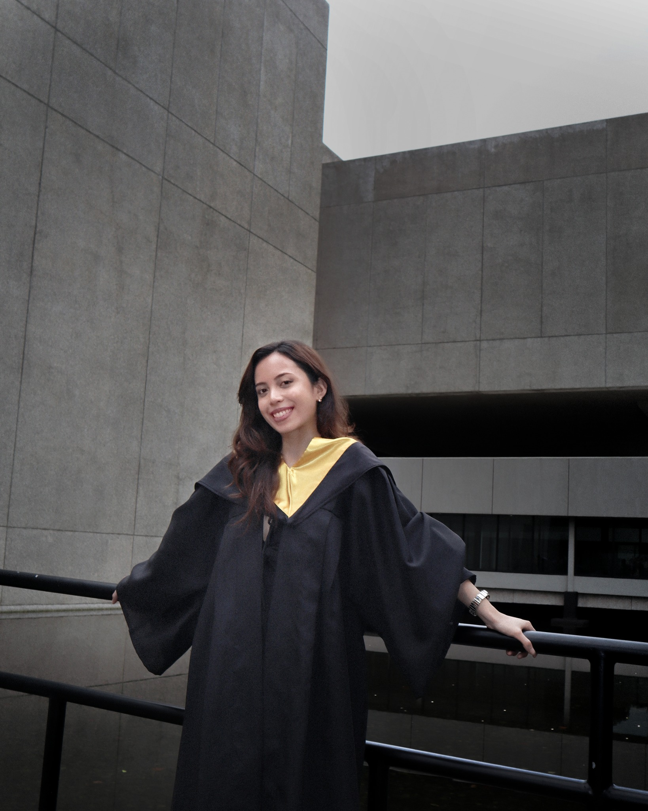

Brand & Marketing Visuals Brand / 2026
01 / Visual identity
BRAND
IDENTITY
IMAGE SLOT
IDENTITY
Rebranding concepts, a redesigned logo, social templates, and marketing materials created during my Hustle PH internship.
Portfolio / 2022—2026
I’m Sofia Dawn Estrada, an applied mathematics graduate who also works across design and video. I make research easier to understand and ideas easier to see.
Rebranding concepts, a redesigned logo, social templates, and marketing materials created during my Hustle PH internship.
Early video projects exploring science communication, internet etiquette, and storytelling.
Explore video & motion ↗Creative direction and production as committee lead for an 18-member team.
Explore selected graphics ↗Undergraduate thesis using optimal control, Python and MATLAB simulations, sensitivity analysis, and intervention comparisons.
Designed survey questionnaires, cleaned and analyzed qualitative responses, then translated findings into reports and decks at Hustle PH.
Research synthesis, data interpretation, and modeling grounded in a BS Applied Mathematics degree from PUP.
A space reserved for future AI automation case studies. No completed project is presented yet.

Design & Data Analysis
I’m Dawn, a designer and applied mathematics graduate. I turn ideas into visuals and information into something people can understand and use.
From brand visuals and video to consumer research and mathematical modeling, I bring curiosity, structure, and care to the work.
Meet Dawn — the full storyBackground & experience
Photoshop, Illustrator, Premiere Pro, After Effects, Canva, and Figma. Branding, layouts, social assets, and video.
Python, R, MATLAB, survey design, qualitative analysis, research synthesis, sensitivity analysis, reporting, and presentations.
An emerging practice. Completed workflows and tools will be documented here as they are built.
For collaborations and opportunities, send me an email.
Let’s talk by email